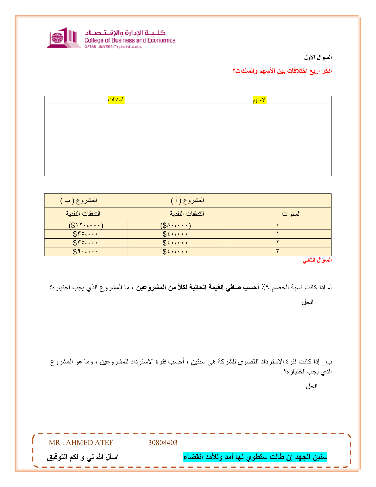
السؤال الأول: اذكر أربع اختلافات بين الأسهم والسندات؟
| وجه المقارنة | السندات (الديون) | الأسهم (الملكية) |
|---|
| طبيعة الأداة | تعتبر دينًا على الشركة، وحاملها دائن. | تمثل حصة ملكية في الشركة، وحاملها مالك. |
| حق التصويت | لا يملك حملة السندات حق التصويت في الإدارة. | يملك حملة الأسهم العادية حق التصويت. |
| تاريخ الاستحقاق | لها تاريخ استحقاق محدد يجب فيه سداد أصل الدين. | ليس لها تاريخ استحقاق (دائمة). |
| الأولوية في السداد | لهم الأولوية في المطالبة بالدخل والأصول عند الإفلاس. | يأتون في المرتبة الأخيرة (حق متبقي) بعد الدائنين. |
| العائد والضريبة | الفائدة تعتبر نفقة وتخصم من الضرائب. | توزيعات الأرباح لا تخفض الدخل الخاضع للضريبة. |
الشابتر: الفصل 7 و الفصل 6.
السؤال الثاني: حساب صافي القيمة الحالية (NPV) وفترة الاسترداد
أ- حساب NPV عند معدل خصم 9%:
المشروع (أ):
$$NPV_A = \frac{40,000}{(1.09)^1} + \frac{40,000}{(1.09)^2} + \frac{40,000}{(1.09)^3} - 80,000 = 21,251 \$$$
المشروع (ب):
$$NPV_B = \frac{35,000}{(1.09)^1} + \frac{35,000}{(1.09)^2} + \frac{90,000}{(1.09)^3} - 120,000 = 11,066 \$$$
القرار: نختار المشروع (أ) لأنه الأعلى.
ب- حساب فترة الاسترداد:
المشروع (أ): يسترد في 2 سنة بالظبط.
المشروع (ب): يسترد في 2.56 سنة.
القرار: نختار المشروع (أ) لأنه ضمن الحد الأقصى (سنتين).
الشابتر: الفصل 8.
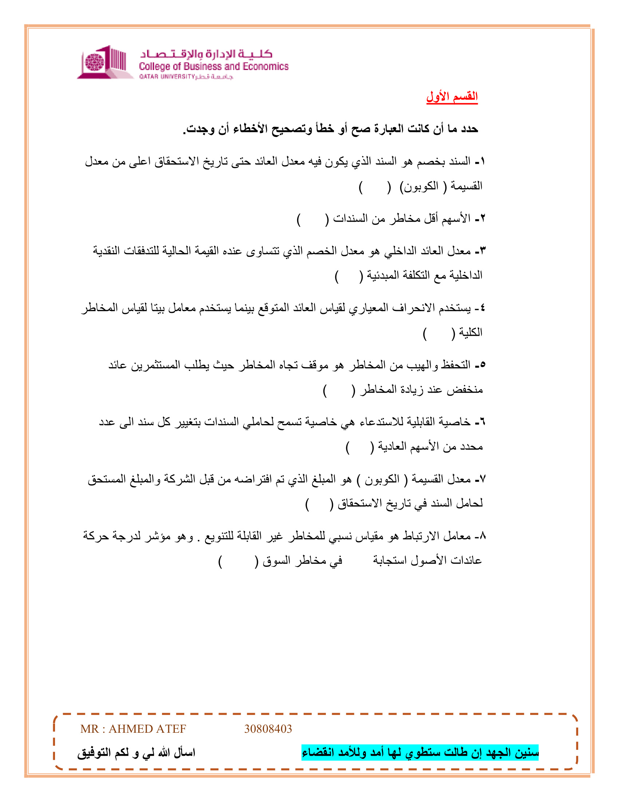
القسم الأول: صح أم خطأ وتصحيح الأخطاء
- السند بخصم: (صح).
- الأسهم أقل مخاطر: (خطأ). الأسهم أعلى مخاطر.
- معدل العائد الداخلي: (صح).
- الانحراف المعياري للعائد المتوقع: (خطأ). الانحراف للمخاطر الكلية، وبيتا للمخاطر النظامية.
- التحفظ هو طلب عائد منخفض: (خطأ). هو طلب عائد مرتفع عند زيادة المخاطر.
- القابلية للاستدعاء تحويل لأسهم: (خطأ). دي القابلية للتحويل.
- معدل الكوبون هو المبلغ المقترض: (خطأ). المبلغ هو القيمة الاسمية.
- معامل الارتباط للمخاطر غير القابلة للتنويع: (خطأ). ده تعريف بيتا.
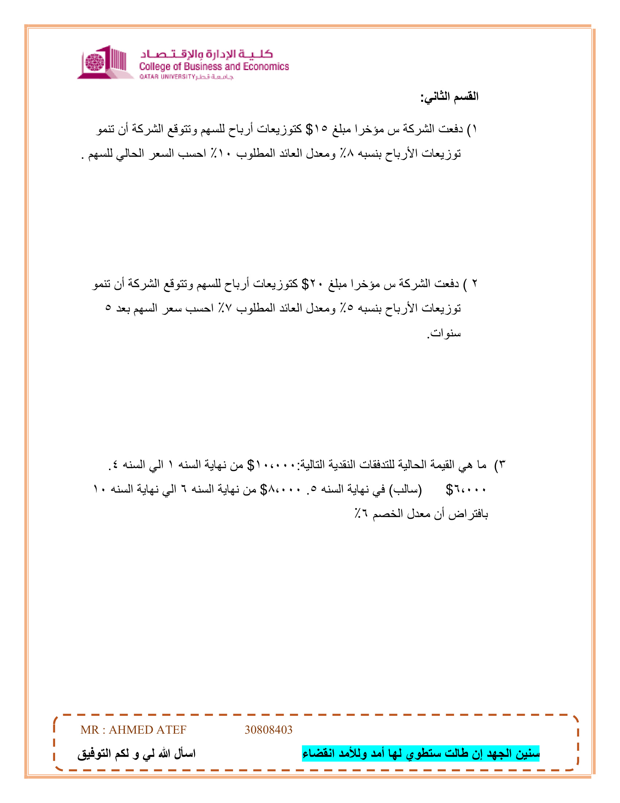
1) حساب السعر الحالي للسهم (النمو المستمر)
$$D_1 = 15 \times (1.08) = 16.2$$
$$P_0 = \frac{16.2}{0.10 - 0.08} = \frac{16.2}{0.02} = \mathbf{810\$}$$
2) حساب سعر السهم بعد 5 سنوات
$$P_0 = \frac{21}{0.02} = 1,050 \$$$
$$P_5 = 1,050 \times (1.05)^5 \approx \mathbf{1,340.1\$}$$
3) القيمة الحالية للتدفقات النقدية المختلطة
$$PV_{Total} = 34,651 - 4,483.8 + 25,183.4 = \mathbf{55,350.6\$}$$
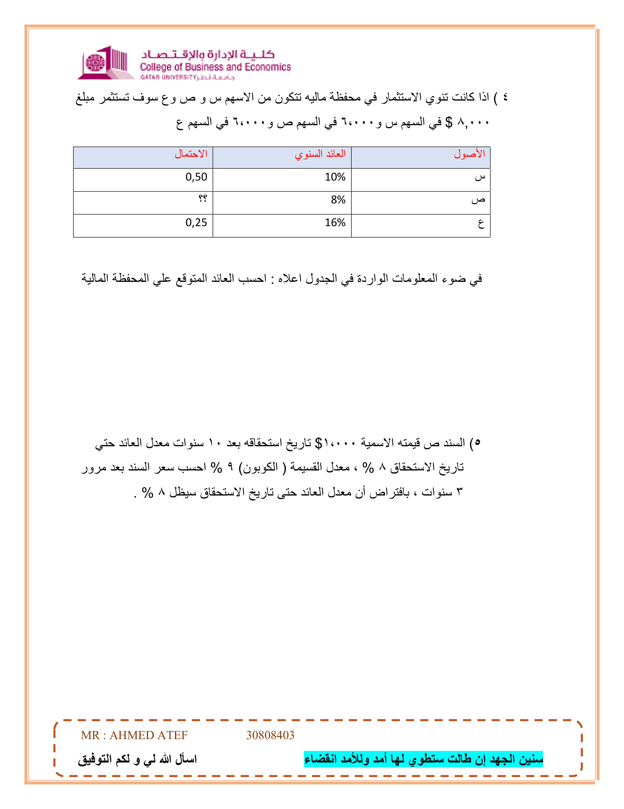
4) حساب العائد المتوقع على المحفظة
$$E(r_p) = (0.40 \times 10\%) + (0.30 \times 8\%) + (0.30 \times 16\%) = \mathbf{11.2\%}$$
5) حساب سعر السند (بعد 3 سنوات)
$$PV_{coupons} \approx 468.58$$
$$PV_{par} \approx 583.50$$
$$Price = \mathbf{1,052.08\$}$$
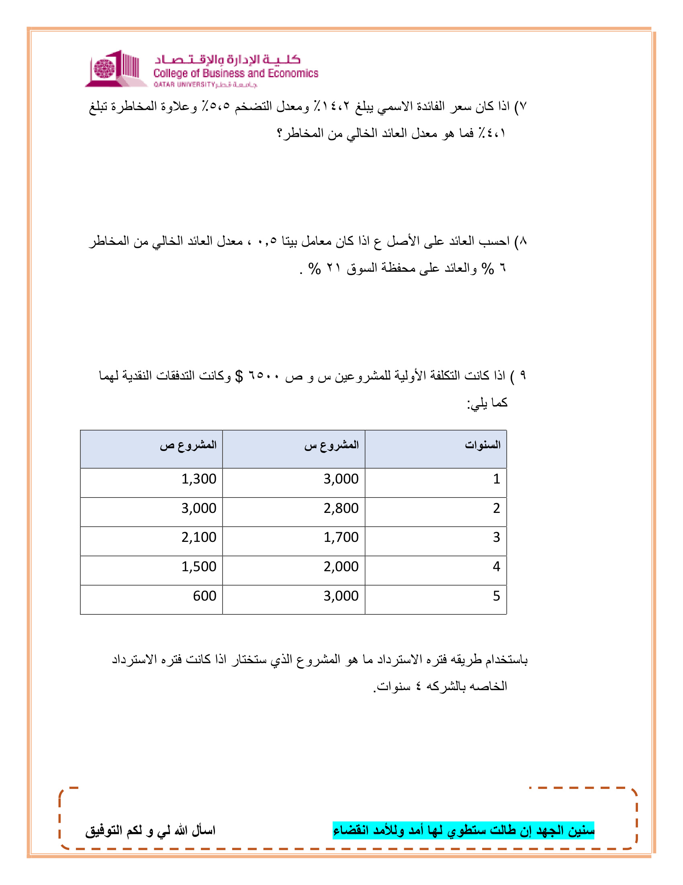
7) حساب معدل العائد الخالي من المخاطر
$$R_F = 14.2\% - 4.1\% = \mathbf{10.1\%}$$
8) حساب العائد باستخدام CAPM
$$r = 6\% + 0.5 \times (21\% - 6\%) = \mathbf{13.5\%}$$
9) فترة الاسترداد للمشروعين
المشروع (س): 2.41 سنة. المشروع (ص): 3.07 سنة. نختار (س).
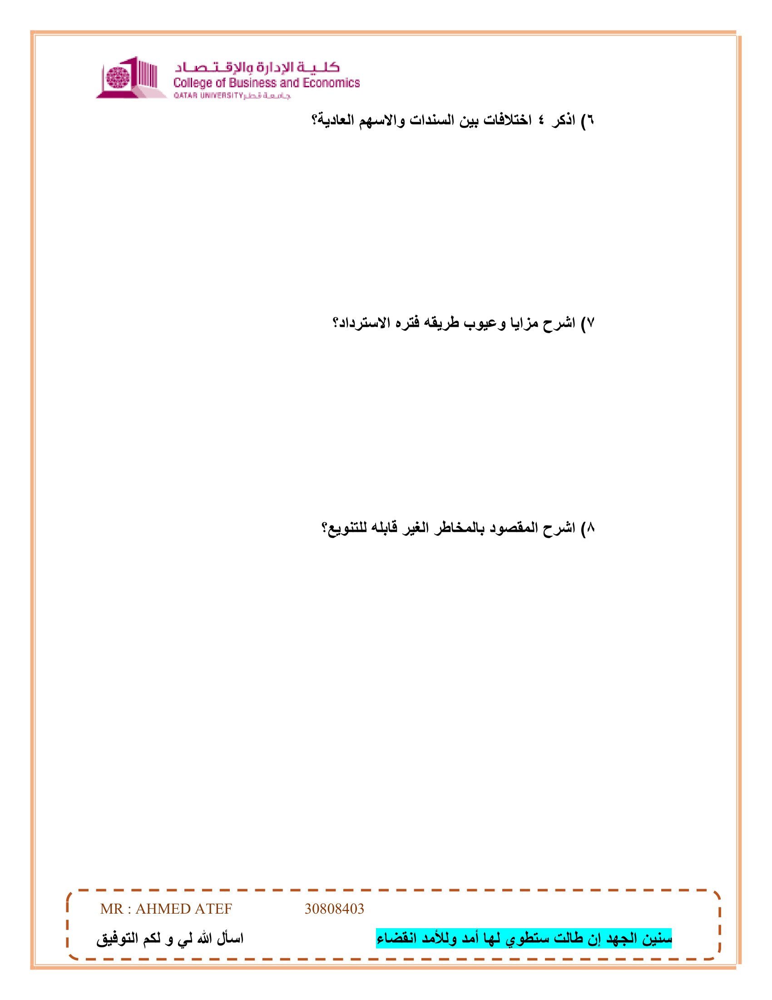
6) اذكر 4 اختلافات بين السندات والأسهم العادية؟
طبيعة الأداة (دين/ملكية)، الأولوية في السداد، العائد (ثابت/متغير)، تاريخ الاستحقاق.
7) مزايا وعيوب فترة الاسترداد؟
مزايا: سهولة، مؤشر سيولة. عيوب: تجاهل القيمة الزمنية، تجاهل ما بعد الفترة.
8) المخاطر الغير قابلة للتنويع؟
مخاطر السوق العامة (تضخم، حروب) التي تصيب الجميع ولا يمكن التخلص منها بالتنويع (تقاس بـ بيتا).
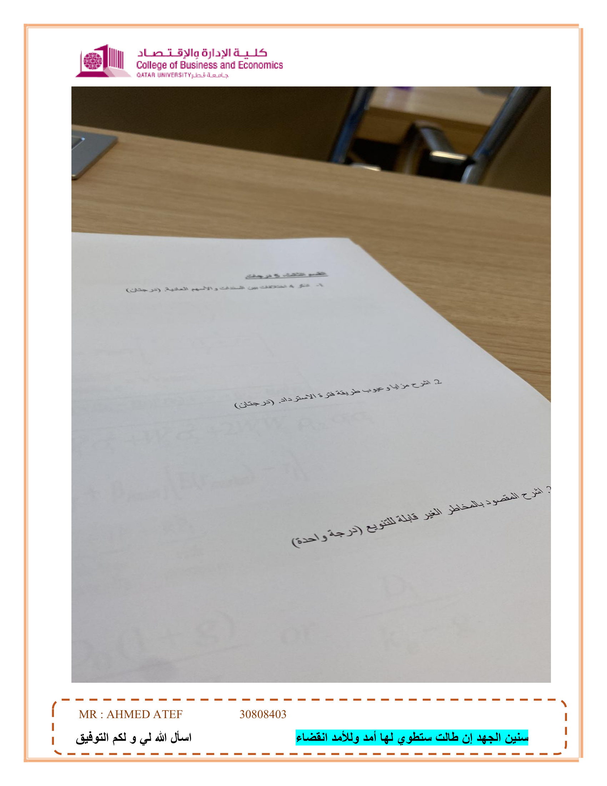
1- اختلافات السندات والأسهم
تم ذكرها بالتفصيل (طبيعة الأداة، التصويت، الاستحقاق، الأولوية).
2- مزايا وعيوب فترة الاسترداد
تم ذكرها بالتفصيل.
3- المخاطر غير القابلة للتنويع
هي المخاطر النظامية (Systematic Risk).
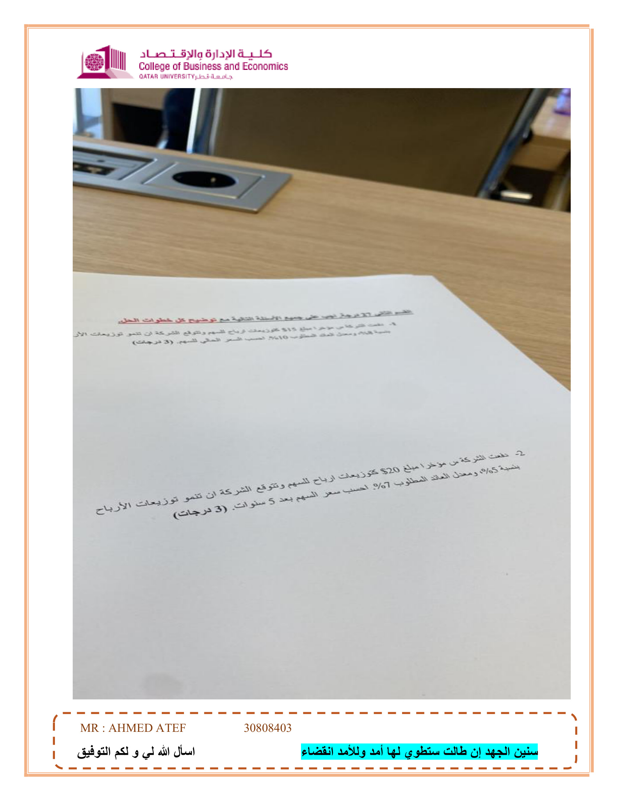
1- سعر السهم (جوردون)
$$P_0 = \frac{16.2}{0.02} = \mathbf{810\$}$$
2- سعر السهم بعد 5 سنوات
$$P_5 = 1,050 \times (1.05)^5 \approx \mathbf{1,340.1\$}$$
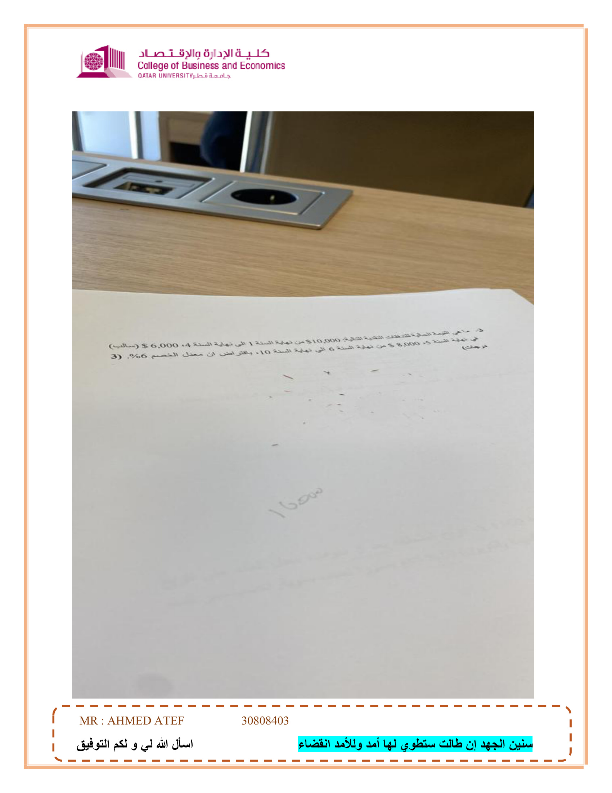
3- التدفقات النقدية المختلطة (تفصيل)
PV1 (سنوات 1-4) = 34,651$
PV2 (سنة 5) = -4,483.6$
PV3 (سنوات 6-10) = 25,182.5$
الإجمالي = 55,350$
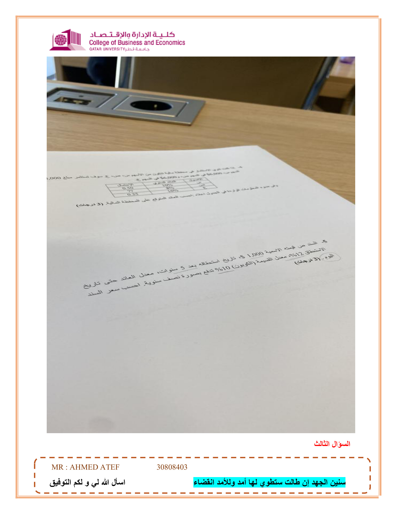
4- عائد المحفظة (الوزن الناقص)
وزن ص = 0.25. الإجمالي: $$E(r_p) = \mathbf{11\%}$$
5- سعر السند (نصف سنوي)
نستخدم n=10, r=6%, PMT=50.
الكوبونات: 368$ + الاسمي: 558.4$ = 926.4$
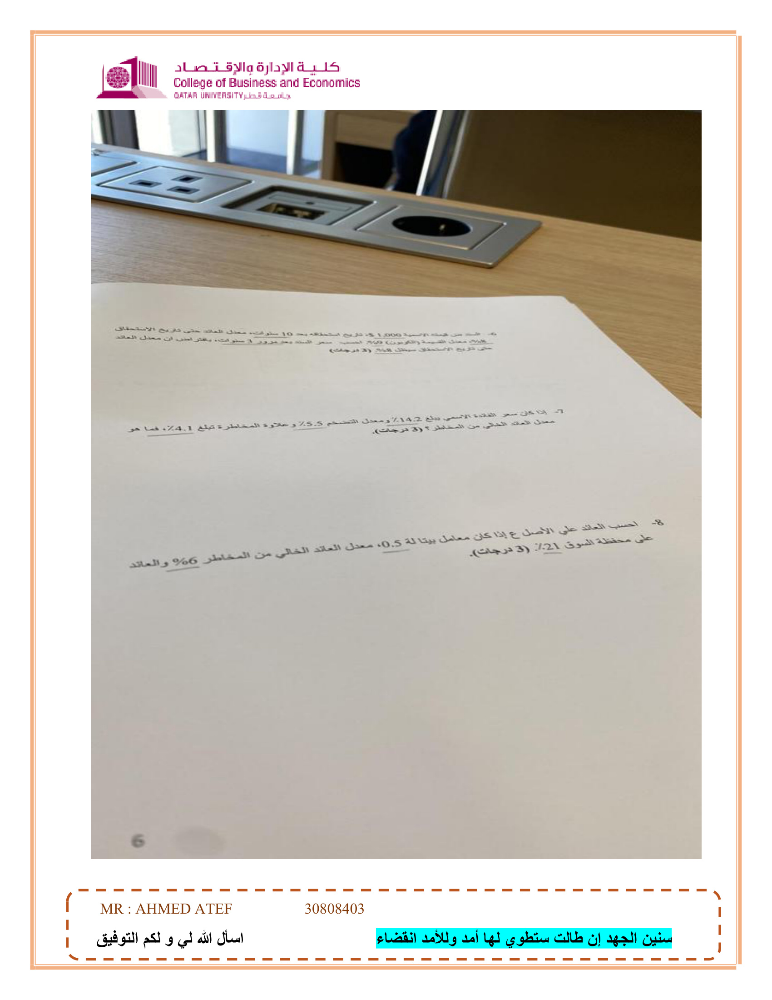
7- العائد الخالي من المخاطر
14.2 - 4.1 = 10.1%
8- CAPM
6% + 0.5(15%) = 13.5%
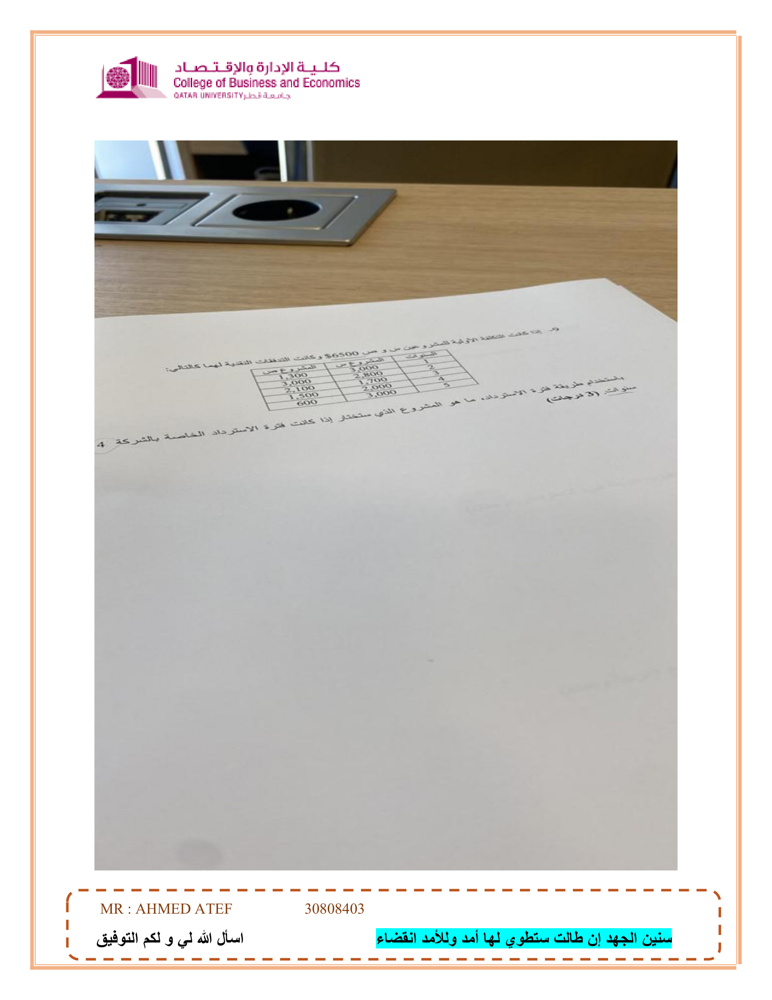
9- المفاضلة (فترة الاسترداد)
س: 2.41 سنة.
ص: 3.07 سنة.
القرار: المشروع س.
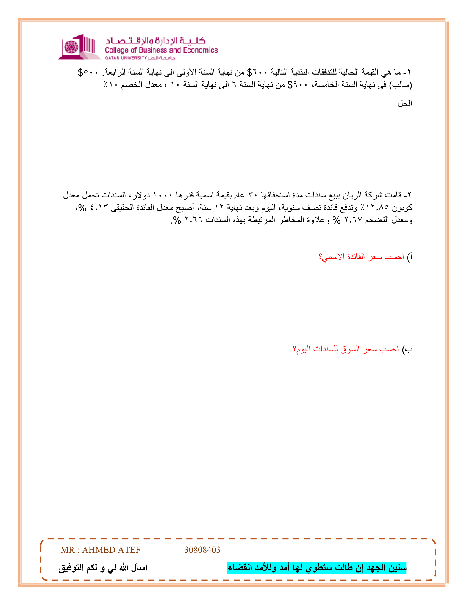
1- التدفقات النقدية المختلطة
PV1 = 1,901.9$
PV2 = -310.5$
PV3 = 2,118.3$
الإجمالي = 3,709.7$
2- تقييم السندات (الاسمية والسوق)
أ) الفائدة الاسمية: $$4.13 + 2.67 + 2.66 = \mathbf{9.46\%}$$
ب) السعر (نصف سنوي): الكوبونات (1,100.9) + الاسمي (189.5) = 1,290.4$
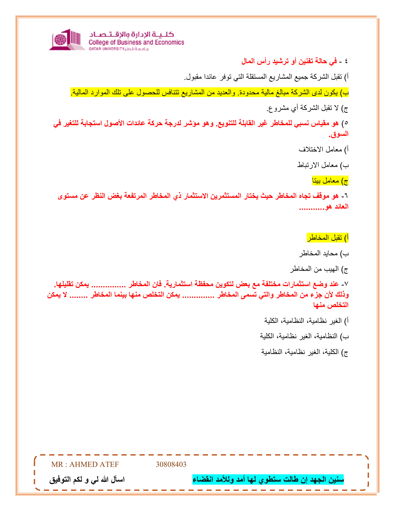
4, 5, 6, 7 - أسئلة اختيارية (MCQ)
4. ترشيد رأس المال: (ب) مبالغ محدودة.
5. مقياس المخاطر النظامية: (ج) بيتا.
6. تقبل المخاطر: (أ) اختيار مخاطر مرتفعة.
7. التنويع: (ج) يقلل الكلية، يزيل غير النظامية.
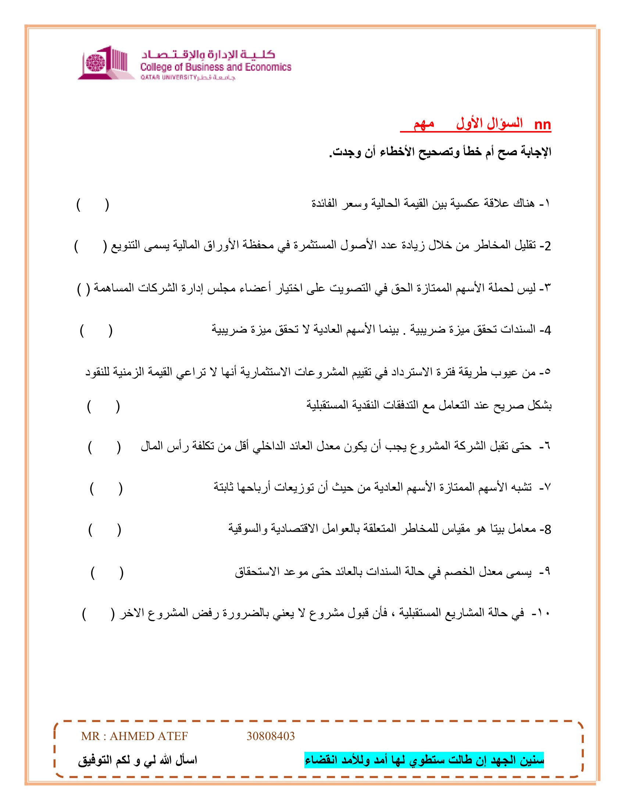
صح أم خطأ (مراجعة)
علاقة عكسية بين القيمة الحالية والفائدة (صح).
IRR لازم يكون أكبر من تكلفة رأس المال (الخطأ كان بيقول أقل).
الأسهم الممتازة تشبه السندات في ثبات الربح.
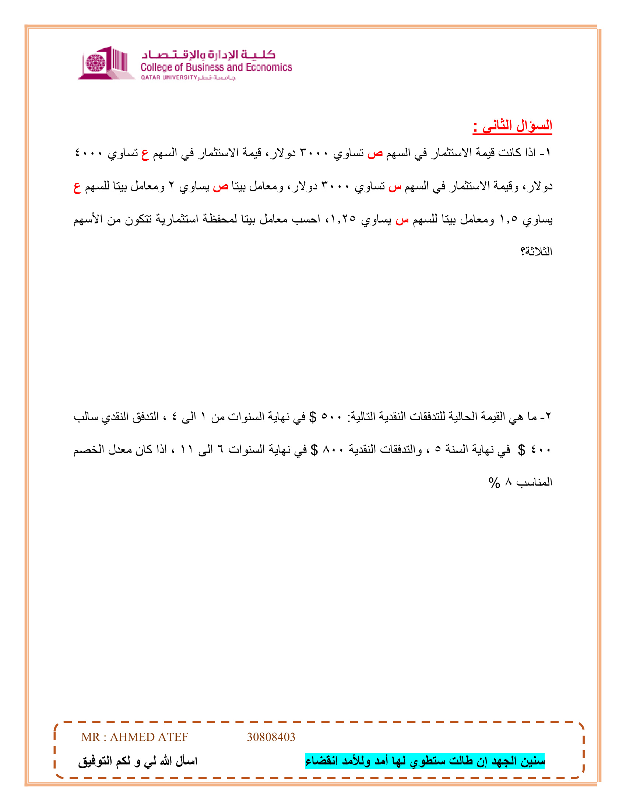
1- بيتا المحفظة
$$ \beta_p = (0.3 \times 2) + (0.4 \times 1.5) + (0.3 \times 1.25) = \mathbf{1.575} $$
2- تدفقات مختلطة (خصم 8%)
$$ Total PV = 1,656.05 - 272.23 + 2,517.01 = \mathbf{3,900.83\$} $$
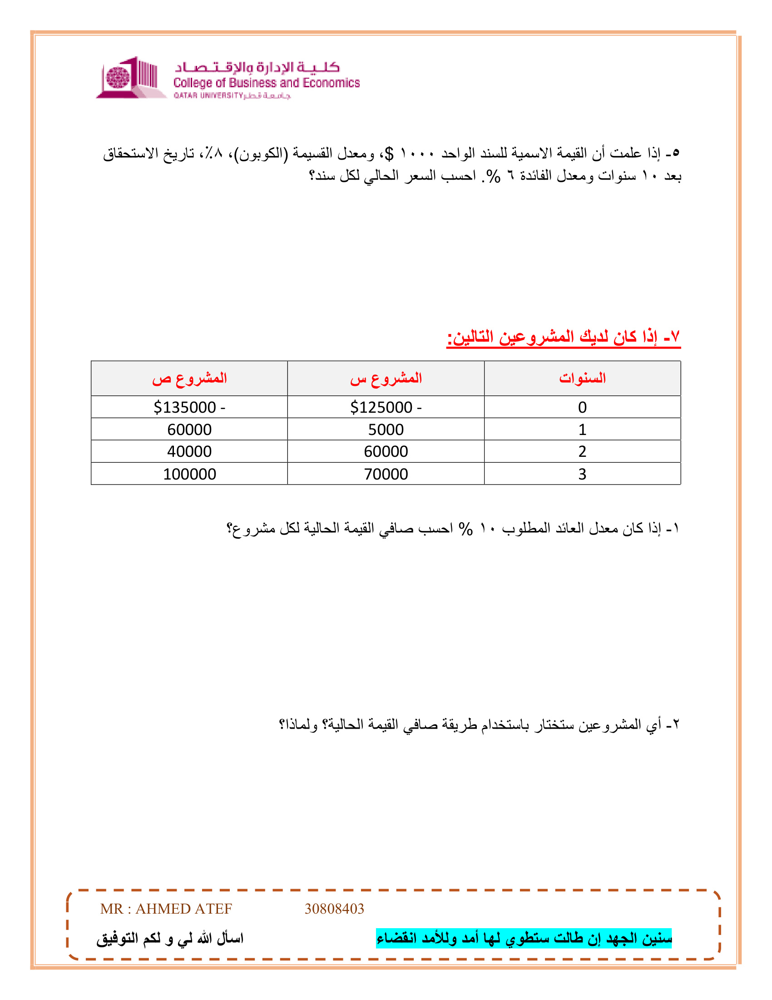
5- سعر السند (علاوة)
$$Price = 588.81 + 558.39 = \mathbf{1,147.2\$}$$
7- المفاضلة (NPV)
NPV س = -18,275 (مرفوض).
NPV ص = +27,734 (مقبول).
نختار ص.
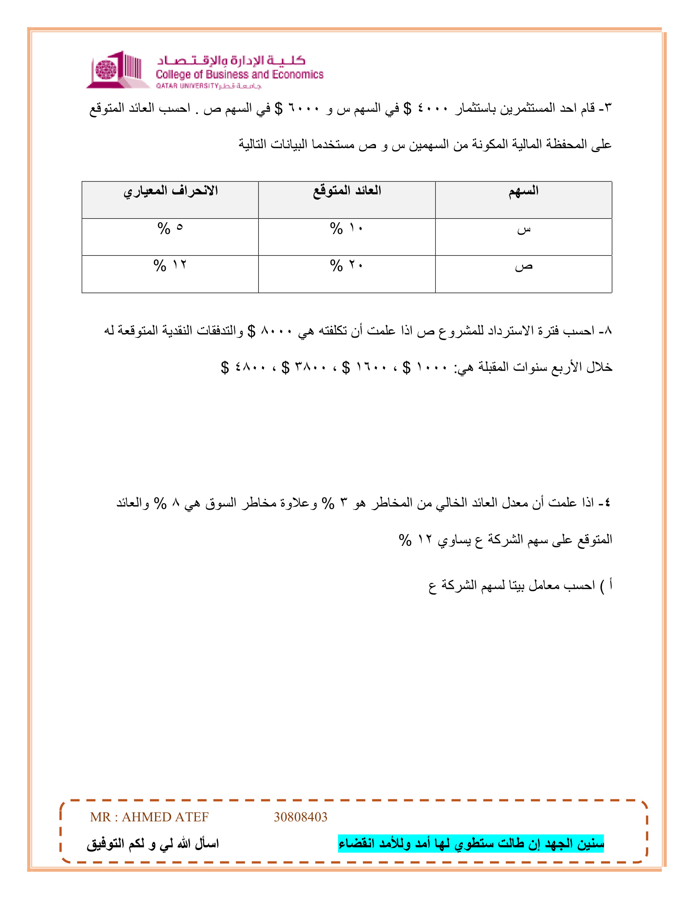
3- عائد المحفظة
$$E(r) = (0.4 \times 10) + (0.6 \times 20) = \mathbf{16\%}$$
8- فترة استرداد (ص)
3 سنوات وجزء (0.33) = 3.33 سنة.
4- حساب بيتا (CAPM عكسي)
$$12 = 3 + 8\beta \rightarrow \beta = 9/8 = \mathbf{1.125}$$
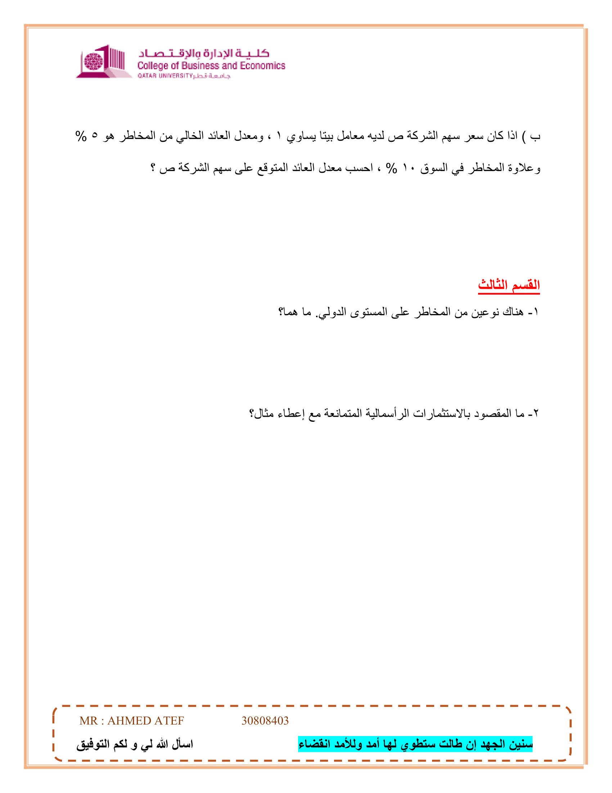
ب) عائد متوقع & مقالي
عائد سهم ص = 15%.
مخاطر دولية: عملة وسياسية.
مشاريع متمانعة: اللي بتتنافس وقبول واحد يلغي التاني.
ملاحظة: الصفحات 21, 22, 23
هي صور مكررة للصفحات السابقة (16, 17, 18) وتم حلها بالفعل.